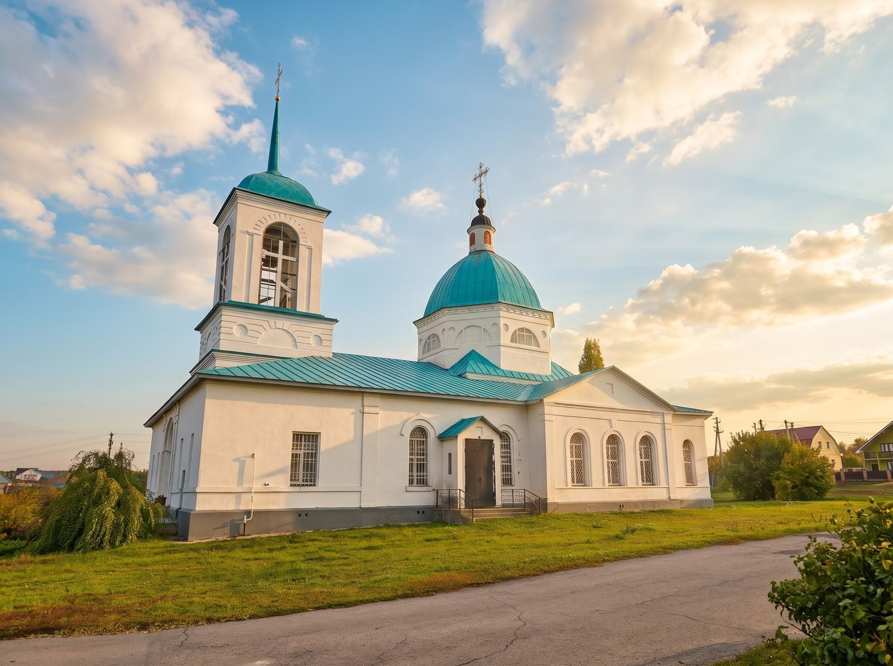

Храм Богоявления Господня
ЯрлуковоСтраничка для прихожан нашего храма.
Она пока в разработке и будет дополняться. Все ссылки работают.
Слово
🎙 ПроповедиБеседы с записью и текстом 📖 БиблияСинодальный перевод 📜 Толкование БиблииВыбор книги · толкования Оптиной пустыниКаждый день
🗓 Календарь дняПраздники, святые, посты · Азбука веры 🙏 МолитвыМолитвослов · Азбука верыДетям
🎧 Аудиокниги для детейЖитие мученика Трифона и другие рассказыО храме
📜 История храма
Храм Богоявления Господня построен в 1809 году. В 1934 году храм закрыли, и почти 70 лет в нём не было богослужений. В 2003 году храм вновь открыт, тогда же началось его восстановление, оно продолжается и сейчас. Храм — памятник истории и культуры XIX века.
Престольные праздники:
Богоявление (Крещение Господне) — 19 января
Святителя Николая Чудотворца — 19 декабря
Тихвинской иконы Божией Матери — 9 июля
Настоятель — протоиерей Владимир Янов · страница во ВКонтакте
Храм в сети
📷 Instagram храмаОткрывается только через VPN📱 Значок храма на экран телефона
Сайт можно открыть одним нажатием, как приложение.
Android (Chrome, Яндекс): нажмите меню ⋮ или ≡ → «Добавить на главный экран» или «Добавить ярлык».
iPhone (Safari): нажмите «Поделиться» (квадрат со стрелкой) → «На экран „Домой“».